Audited frontend
The original project contained a single Blade shell and a default Laravel welcome experience, so the migration focused on preserving the presentation layer rather than forcing server logic into static files.
Migration overview
This version preserves the visual hierarchy, the warm accent palette, responsive behavior, and content structure while replacing server-rendered templates with static HTML.

The original project contained a single Blade shell and a default Laravel welcome experience, so the migration focused on preserving the presentation layer rather than forcing server logic into static files.
All page content was converted into semantic HTML, the styling was moved into a dedicated stylesheet, and interaction was simplified into lightweight JavaScript that works without a backend.